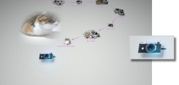

將相片匯入至PS3™
只需啟動Photo Gallery，即可觀賞已保存至PS3™主機儲存空間內的相片。仍未將相片保存至PS3™時，請先將保存至數碼（數位）相機或儲存媒體等的相片匯入至PS3™。
要匯入相片時，應使用USB連接線連接PS3™、數碼（數位）相機或已插入儲存媒體的USB轉接器。請選擇畫面上的攝影機圖示，再遵循指示進行操作。

提示
- 亦可選擇XMB™（交叉媒體廊）的
 （相片）觀看已匯入的相片。
（相片）觀看已匯入的相片。 - 啟動Photo Gallery時，無法將相片寫入儲存媒體。若要將相片寫入至儲存媒體，請關閉Photo Gallery並選擇XMB™的（相片）執行操作。
- 因相機或儲存媒體的種類而異，某些相片可能無法匯入。
- 注意切勿侵害第三人的智慧財產權。